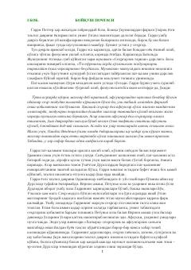

GPGarri Potter Xogvarts maktabidagi uchinchi yilida yangi sarguzashtlarga duch keladi.
Garri Potter Xogvarts sehrgarlik maktabidagi uchinchi o'quv yiliga tayyorgarlik ko'rmoqda. U yozgi ta'tilni Dursllar oilasi bilan o'tkazishga majbur bo'lib, sehrli olamdan uzilib qolganidan qiynaladi. Biroq, Azkaban qamoqxonasidan qochgan xavfli jinoyatchi Sirius Blek haqidagi xabarlar uning hayotini xavf ostiga qo'yadi.